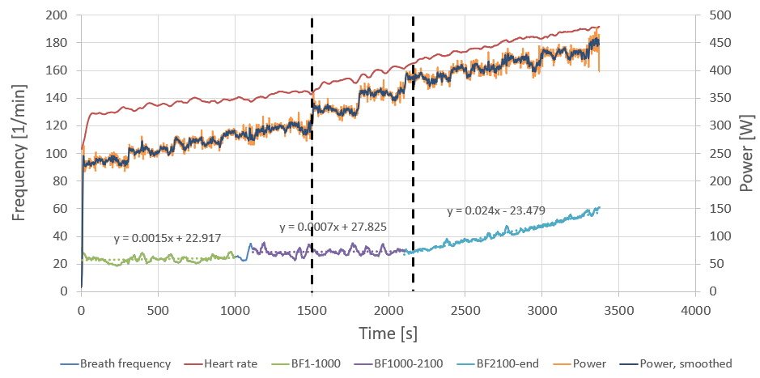
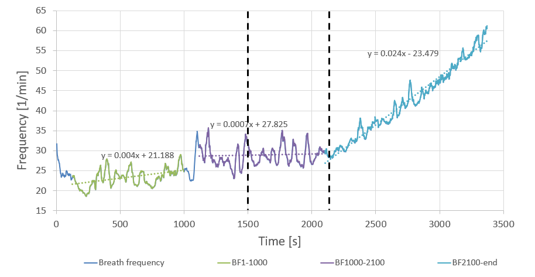
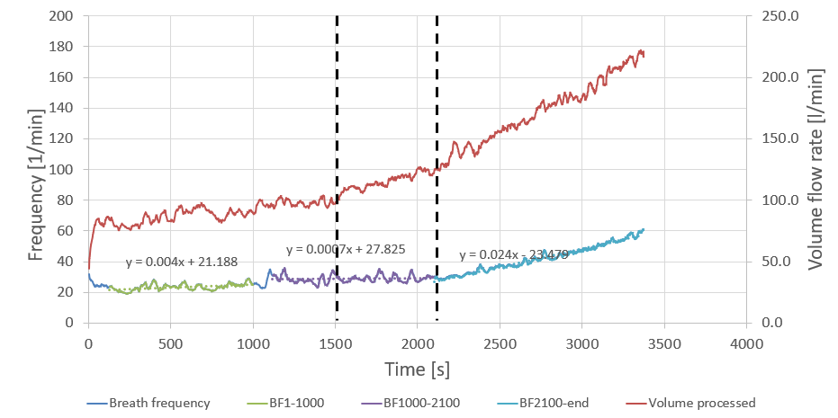
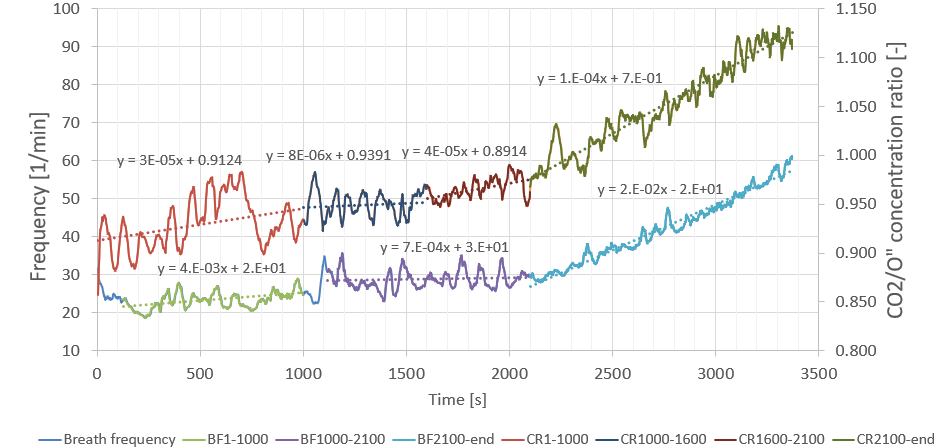

Lactate Testing — Part I: LT1
Background
Cycling is one of those sports where the more time you put into it, the more you get out. This is of course a very sweeping statement, and it is not meant to disregard some important considerations — such as fatigue and overtraining — but time availability is one of the key limiting factors for many amateur riders.
It can therefore be a good investment to spend some time on figuring out how to train well. To make sure that the precious time spent on the bike brings about as much benefit and stimulus as possible. There is no shortage of opinions on what exactly training well means, and I do not intend to argue the superiority of any one training method over another; instead, this entry will be very specific to my own circumstances (which, on the flip side, are probably not dissimilar to many committed amateur racers out there) — the kind of time availability I have, the kind of training it allows me to do, and the kind of racing I partake in.
In the winter season, I spend anywhere between 10 and 15 hours on the bike. This is neither insignificant nor particularly extravagant, but given that, at that time of the year, those hours are almost entirely composed of turbo training, the work tends to be consistent and high quality. With this kind of volume, and given that the cycling gods have not gifted me with the sort of magical powers of recovery Wout Van Aert can conjure, a fair amount of that time is spent in the mystical Zone 2 — as much out of necessity to recover as it is out of my stalwart trust in San-Millanism.
Okay. So given that I spend a lot of time in Zone 2, aka just under the first lactate threshold (LT1), how do I get the most bang for my buck? How do I know that I am going as hard as possible, without going too hard, falling into the next zone and not reaping the benefits of mitochondrial adaptation? Simple: go to a lab, perform a very slow cycling ramp test while having your fingertip pricked periodically to analyse blood lactate content; then proceed to draw a graph of lactate vs. power output, identify the first kink in the line and… that’s it!
This is all very well, good, and simple (if not exactly affordable), were it not for one detail: this kind of experiment only offers a snapshot of one’s physiology. The very aim of training is to improve performance, which is synonymous with influencing the underlying physiological markers. So how do you track your adaptation, or re-baseline your training after a period of injury or illness?
Some have proposed that an approximation of LT1 can be achieved by means that do not involve lab-based blood sacrifice. Anecdotally, simple methods based on features such as changes in breathing pattern and/or breathing cadence, ability to hold a casual conversation (while exercising, of course — this is not a test of extraverted social prowess), percentage of max heart rate, percentage of functional threshold power, together with many others, have been proposed as means of approximating LT1. This, however, feels awfully vague and subjective, and I’ve never put much stock in such methods (which is not to say I haven’t used them in the past — beggars can’t be choosers!).
Now at last we get to the essence of this entry. Question: is there a middle ground between frequent lab testing (accurate but expensive, prerogative of the pros) and the subjective and unverified self-reporting-based methods (free but possibly wildly inaccurate)?
The Test
In pursuing an answer to this question, I visited Anglia Ruskin University’s Cambridge Centre for Sport and Exercise Sciences. CCSES (who are a great bunch and I cannot recommend them enough) have some truly top-end equipment at their disposal, and very kindly allowed me to define my own test procedure — which consisted of 5-minute blocks of progressively increasing power — and then took me through it every step of the way.
The intervals were relatively long, but I wanted to reach something really approaching metabolic steady state; the 1-minute increments typical of ramp tests don’t really allow for that, and the whole experimental procedure (which includes taking blood samples) is necessarily rushed and it would be exceedingly easy to have the results compromised. Throughout the test the air I was breathing out was continuously analysed, largely to establish the \(\text{CO}_2\) and \(\text{O}_2\) volumes inhaled/exhaled, but also to gather the respiratory telemetry — the breathing cadence, volume, and so on. Towards the end of each interval, a small sample of blood was taken from my finger to keep track of the blood lactate level.
I won’t be going into any detail of how lactate comes into play and why it is important from the metabolic point of view; there are many excellent sources covering the topic in much more depth and with much more eloquence than I can muster, and your time is much better spent digesting those instead. For our purposes here, it will be quite sufficient to say that we will consider the blood lactate concentrations as the ‘true’ markers of the metabolic state — i.e. we will be using them as the gold standard in defining \(\text{LT}_1\) and \(\text{LT}_2\). Our aim is therefore to use all the other data — heart rate, power, respiration telemetry, and so on — to hopefully derive some means of identifying \(\text{LT}_1\) and \(\text{LT}_2\) without splashing out on another trip to the laboratory.

The power protocol was: 230 > 250 > 265 > 280 > 295 > 325 > 355 > 385 > 400 > 415 > 430 W, each step 5 minutes (300 seconds) in duration. The power data looks a bit fuzzy — it comes from my pedal-based power meters (for ease of recording) but the test was conducted using a state-of-the-art ergometer. The flywheel on the ergometer was enormous; at each step the power would overshoot as I attempted to keep a steady cadence, spinning up the flywheel. Once the flywheel was up to speed, the resistance underfoot diminished and, still holding a steady cadence, the power would drop. Power averages over each step matched up very well (to within a couple of watts) despite a reasonably large second-to-second variation, so the power trace here will only serve as a guide for the eye.
The uneven step sizes through the ramp reflect a desire to both cover a large power range (to capture \(\text{LT}_1\), \(\text{LT}_2\), and an estimate of \(\text{VO}_{2\text{max}}\) in one session) and to get good resolution in the critical areas. I planned on motoring through the areas of less interest with larger steps, then reverting to smaller steps near my estimated \(\text{LT}_1\) and \(\text{LT}_2\). This backfired: I underestimated my \(\text{LT}_1\) (I expected it around 270–290 W), and did not account for the fact that performing such a long protocol in a carbohydrate-fasted state would fatigue me before reaching the top of the ramp. So my fix on \(\text{LT}_1\) is not great (somewhere between 295 W and 325 W), and the \(\text{LT}_2\) estimate is almost certainly too low.
All the more reason to extract some learning from the data.
What the data showed
Let us look more closely at the breath frequency data. The data is quite noisy, but I think this is largely artificial — attributable to the sampling/averaging method used, or a valve assembly not detecting opening/closing correctly. It seems unlikely that my breathing pattern varied by as much as a third minute-by-minute in both directions (note the large artifact at ~1100 s). It is more instructive to look at longer-term averages.
When doing so, one aspect that stands out right away is that the data can be subdivided into three sections: an initial gentle ramp-up, then a period of effectively constant cadence, followed by a rapid increase. Moreover, the onset of the rapid-increase section coincides with the \(\text{LT}_2\) power.

But what is the deal with the middle section? Shouldn’t I be processing more air — breathing faster — as resistance increases? Perhaps this is a bit like blood circulation: the volume circulated is not just a function of heart rate, but also of stroke volume. But where the heart volume is largely fixed, we can fill the lungs to a greater or lesser extent. Is it the breath volume that compensates for the constant cadence?

Clearly, the total volume of air processed (in red, right axis) is a lot less of a straight line. It is pretty much constant in the 1200–1500 s region (corresponding to a constant power of 295 W), but then, as power goes up, the volume flow also goes up. So yes: it is the breath volume that compensated for breath frequency.
However, while we have answered one question, we have replaced it with another. If in the 1200–1500 s window both volume flow and breath frequency are constant at constant power (295 W), why isn’t the volume flow constant in the 1500–1800 s period in which both power (325 W) and breath frequency are also constant?
This is where we get to the main course. Exercise physiology defines the Ventilatory Threshold (VT) as a point at which the amount of \(\text{CO}_2\) being processed increases faster than the amount of \(\text{O}_2\) being taken in. In the 1500–1800 s period I was processing more and more air — but was this to get more oxygen on board, or to get the \(\text{CO}_2\) out? As is often the case, it was a little bit of both. The \(\text{O}_2\) volume was indeed increasing throughout the ramp step, but the \(\text{CO}_2\) output was increasing by even more.

The right axis depicts the ratio of the concentration of \(\text{CO}_2\) to that of \(\text{O}_2\). Whenever that number is increasing, there is more \(\text{CO}_2\) for every unit of \(\text{O}_2\). While it doesn’t look particularly severe, the gradient in the 1500–1800 s section is more than five times that of the 1200–1500 s section.
The heuristic
I subsequently performed a number of sessions where I adjusted the power around the inflection point, in the 295–325 W range — often blind (someone would adjust the power at unknown intervals and by unknown amounts to avoid confirmation bias) — in order to devise some heuristics for guessing when I am approaching \(\text{LT}_1\).
Clearly, there is no point in trying to base any heuristics around breathing cadence, since that remains constant a good deal below and above \(\text{LT}_1\). My experience confirmed this: I could not produce any useful rules of thumb based on breathing cadence, and attempting to do so only left me producing highly artificial breathing patterns. It’s best to leave that to the brain’s autopilot and focus on other avenues.
The best heuristic I managed to produce was that associated with the desire to exhale. Note the emphasis: this was not a desire for more \(\text{O}_2\) in, but to get the \(\text{CO}_2\) out. While allowing the autonomic nervous system to do the job of adjusting breathing cadence however it saw fit, I would focus on that desire to exhale. This has the advantage of being very salient — you simply cannot ignore it. While at \(\text{LT}_1\) it is not something that will feel anywhere near equivalent to being waterboarded, it takes very little mental effort to keep track of — it’s one of those ‘you’ll know it when you see it’ type things. And if you really don’t know the sensation I’m talking about, just hold your breath for a little longer than is comfortable. That very first hint of panic in the back of your head, quite early through the breath hold, is what you’re after.
So there you have it — a simple way to monitor \(\text{LT}_1\). While keeping your breathing on autopilot, increase the power until you feel that extra incentive to breathe out. Then knock it back 10–15 watts, and I reckon you won’t be far off your \(\text{LT}_1\). I have tested it quite a bit and it works for me. That’s about zero guarantee that it will also work for you, but if you have any similar experiences I’d love to hear about it!
As for where it comes from: somewhere on that \(\text{CO}_2\)/\(\text{O}_2\) ratio upslope, the increase in \(\text{CO}_2\) builds up to a level that is noticeable — or at least it is noticeable if you know you’re looking for it. Without conducting both field testing and this supporting analysis, I don’t think I would have put two and two together with any confidence. Having done all this and figured out the right words to Google, it turns out there is plenty of literature linking exercise, blood acidification, lactate build-up, \(\text{CO}_2\) build-up and detection, and so on (see the Wikipedia page for carotid bodies — absolutely bonkers!).
In the next post, I will try to do for \(\text{LT}_2\) what I did here for \(\text{LT}_1\). Are the inflection points of any significance? What on Earth is the Respiratory Compensation Point? This — and more — in the next instalment of Dubious Exercise Science — do stay tuned.